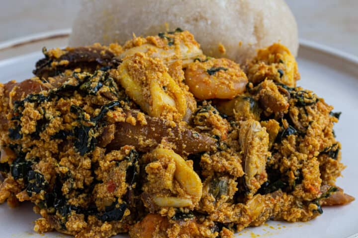
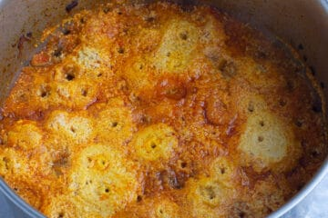
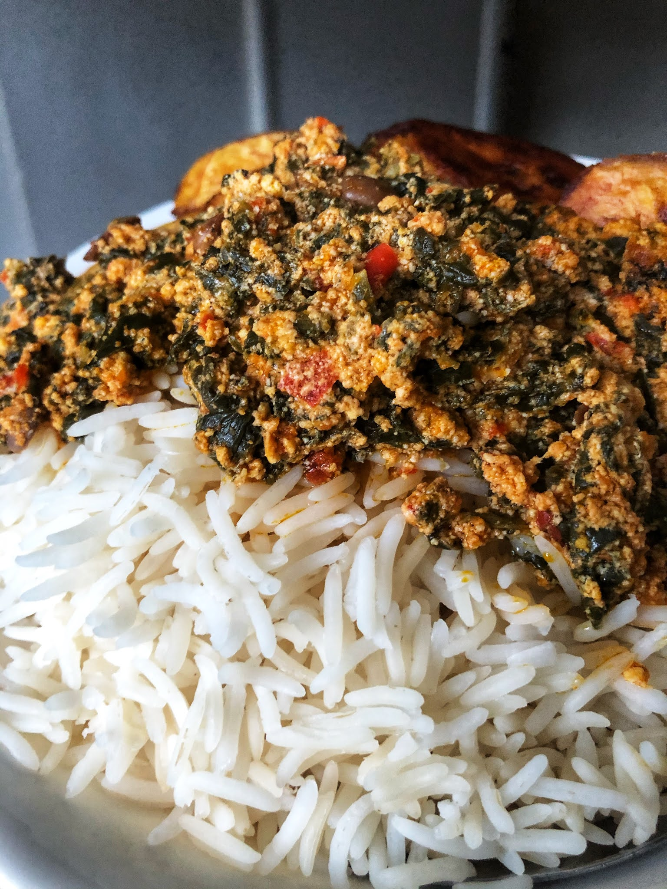

Egusi

Description
Egusi soup is very popular across West Africa. It is prepared from ground egusi melon seed and typically cooked with meat or fish and leafy vegetables. The recipe I am sharing here is for easy and tasty Nigerian egusi soup, also known as “efo elegusi”, in Yoruba language. It is a version of egusi soup cooked with leafy vegetables.
Ingredients
- Palm Oil
- Onions
- Tomatoes
- Salt
- Dried Fish
- Red bell-pepper
- mixed sea food
- Grounded crayfish
- Grounded Egusi
Steps in making Egusi
- Blend red bell pepper, scotch bonnet pepper, tomatoes and one onion in a food processor with a cup of water.
- Defrost the frozen seafood. Wash, strip and slice the kale; chop the remaining onion. Cut the smoked mackerel fillets into smaller pieces. Keep to one side.
- Heat the oil in a saucepan for 30 secs, add the chopped onions. We are not looking to bleach the oil here. Fry until the onions appear translucent, then add the locust beans. Stir for one minute to prevent sticking.
- Add the blended pepper mix and leave to cook for around 15 mins, stirring occasionally, then add some water into the pot (3-4 cups). Pour in the dried fish and ground crayfish with some salt to taste. Smoked mackerel is salty, and will make the soup more salty, so make allowance for that. Leave to simmer for 5 mins.
- Take 2 tablespoons of the cooking sauce and add into the egusi. Mix well to make a thick paste. Use your hands to make small egusi balls before dropping into the pan.

- Reduce the heat and allow to cook for 15 mins.Efo elegusi
- Mix in kale and smoked mackerel. If you think the soup is too thick, add some more water. Leave to simmer for 10 mins, still under low heat.
- Add the seafood and leave for 5 mins.

Enjoy your meal!
Back to main page
Back to top
next